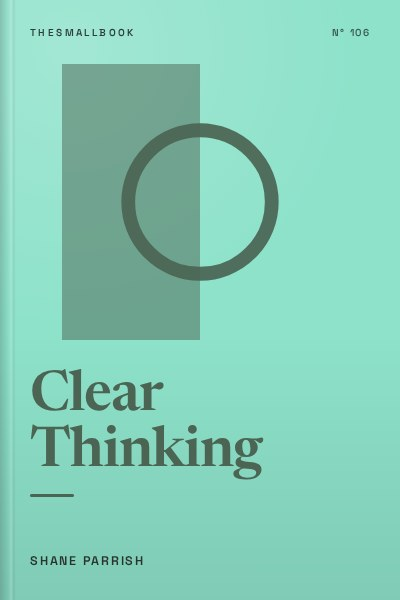

Library › Psychology & People
Clear Thinking - Summary & Key Lessons

Turning ordinary moments into extraordinary results. Most bad decisions happen before you realise you are deciding.
📖 OPEN THE FULL INTERACTIVE BREAKDOWN →🌐 Read it in Hindi, Hinglish, Gujarati, Tamil & 22 more languages, with audio.
💡 The Big Idea
Shane Parrish, founder of the Farnam Street blog, argues that the biggest gains in life come from ordinary moments when we react without thinking. Our biological defaults, emotion, ego, social conformity and inertia, push us into poor decisions. Clear thinking means creating space between stimulus and response so we can reason. The book offers practical strategies: build self-accountability, self-knowledge, self-control and self-confidence; set safeguards against weakness; and develop a decision process that improves over time. Ultimately, clear thinking helps you define and pursue what truly matters.
🧠 The 10 Key Lessons
Lesson 1: Ordinary Moments Decide Your Life
Part 1: The Enemies of Clear Thinking
Parrish argues that we often think big decisions shape our lives, but ordinary moments matter more: how we respond to an irritating email, a criticism or a small temptation. These moments add up. When we react automatically, we often make choices that put us in worse positions. Clear thinking starts by noticing these moments and pausing before reacting.
📖 Example: Parrish shares how, early in his career at an intelligence agency, he reacted angrily to a colleague's comment, damaging a relationship. He later realised that pausing would have led to a much better outcome. Read the full example →
⚡ Do this: For one day, notice moments when you feel an urge to react quickly. Pause for three breaths before responding.
Lesson 2: The Emotion Default
Chapter 2: The Emotion Default
Strong emotions such as anger, fear or excitement narrow our thinking and push us to act quickly. Parrish suggests recognising when emotions are high and delaying decisions until calm. Emotions are signals, not commands.
📖 Example: Sending an angry message in the heat of the moment often leads to regret. Waiting a few hours allows clearer thinking. Read the full example →
⚡ Do this: If you feel strong emotion while writing a message, save it as a draft and revisit it after at least an hour.
Lesson 3: The Ego Default
Chapter 3: The Ego Default
Our ego wants to protect our self-image. It makes us defend bad ideas, avoid admitting mistakes and seek status. Parrish encourages separating identity from ideas and focusing on outcomes rather than being right.
📖 Example: A manager who refuses to admit a project is failing because it was their idea wastes time and resources. Admitting the mistake early could save the team. Read the full example →
⚡ Do this: Think of one opinion you hold strongly. Write down evidence that would change your mind.
Lesson 4: The Social Default
Chapter 4: The Social Default
Humans want to fit in. We often follow the crowd, even when it leads us astray. Parrish suggests noticing social pressure and asking whether you would make the same choice if no one were watching.
📖 Example: People often join investment trends or career paths because others do, not because they fit their goals. Read the full example →
⚡ Do this: Before following a trend, ask: 'Would I do this if no one else was doing it?'
Lesson 5: The Inertia Default
Chapter 5: The Inertia Default
Inertia keeps us doing what we have always done, even when it no longer serves us. Parrish encourages regularly reviewing habits and commitments, and making changes deliberately.
📖 Example: Someone stays in a job they dislike for years because changing feels hard, even though better options exist. Read the full example →
⚡ Do this: List three habits or commitments you continue mainly out of routine. Decide whether to keep, change or drop each.
Lesson 6: Build Strength: Accountability and Self-Knowledge
Part 2: Building Strength
Parrish identifies four strengths: self-accountability, self-knowledge, self-control and self-confidence. Taking responsibility for outcomes, understanding your strengths and weaknesses, controlling impulses and believing in your ability to handle challenges all support clear thinking.
📖 Example: Parrish describes leaders who take responsibility for failures instead of blaming others, earning trust and learning faster. Read the full example →
⚡ Do this: Write down one recent mistake. Describe your role in it and what you will do differently.
Lesson 7: Safeguards Against Weakness
Part 3: Managing Weakness
Instead of relying on willpower, Parrish suggests creating safeguards: rules, routines and environments that prevent poor decisions. For example, avoiding situations that trigger impulsive behaviour or setting default rules for common choices.
📖 Example: Someone who struggles with late-night snacking keeps snacks out of the house, removing temptation. Read the full example →
⚡ Do this: Create one rule that prevents a common mistake, such as 'No important decisions after 10 PM.'
Lesson 8: Decide Well: Define the Problem
Part 4: Decide
Good decisions start with clearly defining the problem. Parrish suggests asking what success looks like, identifying constraints and considering second-order consequences, effects beyond the immediate outcome.
📖 Example: A company cutting costs by reducing customer service may save money short term but lose customers long term. Read the full example →
⚡ Do this: For a current decision, write down what success looks like and one possible second-order effect.
Lesson 9: Positioning: Avoid Bad Situations
Part 4: Decide (Positioning)
Parrish emphasises positioning, putting yourself in situations where good outcomes are likely. Avoiding debt, maintaining health and building relationships create options. Good positioning reduces the need for brilliant decisions later.
📖 Example: Someone with savings can take career risks or handle emergencies calmly, while someone with debt faces pressure. Read the full example →
⚡ Do this: Identify one action that would improve your position, such as building an emergency fund or improving a skill.
Lesson 10: Define What Matters
Part 5: Pursue What Matters
Clear thinking ultimately serves a purpose: living according to your values. Parrish encourages defining what success means to you, not to others, and aligning daily choices with it.
📖 Example: Some people chase promotions they do not want because society values them, rather than pursuing work they find meaningful. Read the full example →
⚡ Do this: Write a short definition of a good life for you. Check whether your current priorities align with it.
✅ 5-Step Action Plan
- Pause for three breaths before reacting to triggers.
- Save emotional messages as drafts for an hour.
- List habits you continue out of inertia and review them.
- Create one safeguard rule against a common mistake.
- Write your personal definition of success.
⚠️ When This Doesn't Work
Parrish's advice assumes you have time and space to pause and reflect. In high-pressure jobs or emergencies, quick decisions are sometimes necessary. Also, some defaults, like social conformity, can be useful in close-knit communities. The goal is awareness, not rejecting all instincts.
💀 The Graveyard Proves It
💬 Best Quotes from Clear Thinking
- “The ability to think clearly is the ability to create space between a stimulus and your response.”
- “Positioning is the most important thing. Get in a good position and you will not need to be brilliant.”
- “Ordinary moments determine our future more than extraordinary ones.”
Interactive version: mark lessons as read, listen in your language, share quote cards.